Effect of Exercise on Cognition, Memory, and Executive Function: A Study-Level Meta-Meta-Analysis Across Populations and Exercise Categories
Frantisek Bartos, Martina Luskova, Kseniya Bortnikova, Karolina Hozova, Klara Kantova, Zuzana Irsova, Tomas Havranek (2025), "Effect of Exercise on Cognition, Memory, and Executive Function: A Study-Level Meta-Meta-Analysis Across Populations and Exercise Categories," available at osf.io/preprints/psyarxiv/qr8e2_v1. https://doi.org/10.31234/osf.io/qr8e2_v1.
František Bartoš1, Martina Lušková2, Kseniya Bortnikova2, Karolína Hozová2, Klára Kantová2, Zuzana Iršová2,3, Tomáš Havránek2,3,4
1 Department of Psychological Methods, University of Amsterdam, Amsterdam, Netherlands
2 Institute of Economic Studies, Faculty of Social Sciences, Charles University, Prague, Czech Republic
3 Meta-Research Innovation Center, Stanford, CA, USA
4 Centre for Economic Policy Research, London, UK
Author Note
Correspondence concerning this article should be addressed to František Bartoš at f.bartos96@gmail.com
František Bartoš https://orcid.org/0000-0002-0018-5573; Martina Lušková https://orcid.org/0009-0004-0603-5455; Kseniya Bortnikova https://orcid.org/0000-0002-3639-7551; Karolína Hozová https://orcid.org/0009-0001-5181-1183; Klára Kantová https://orcid.org/0000-0003-4540-9152; Zuzana Iršová https://orcid.org/0000-0002-0753-8124; Tomáš Havránek https://orcid.org/0000-0002-3158-2539
Abstract
Physical exercise is widely believed to enhance cognition, yet evidence from meta-analyses remains mixed. Here we compile a study-level dataset of 2,239 effect-size estimates from 215 meta-analyses of randomized controlled trials examining the effect of exercise on general cognition, memory, and executive functions. We find strong evidence of selective reporting and large between-study heterogeneity. Analyses adjusted for publication bias reveal average effects much smaller than commonly reported (general cognition: standardized mean difference, SMD, = 0.227, 95% credible interval 0.116 to 0.330; memory: SMD = 0.027, 95% credible interval 0.000 to 0.227; executive functions: SMD = 0.012, 95% credible interval 0.000 to 0.147), along with wide prediction intervals spanning both negative and positive effects. Subgroup analyses identify specific population-intervention combinations with more consistent benefits. Overall, broad claims of generalized cognitive enhancement resulting from physical exercise appear premature; the evidence supports targeted, population- and intervention-specific recommendations.
Keywords: Publication bias, Bayesian, Brain health, Evidence, Policy
Effect of Exercise on Cognition, Memory, and Executive Function: A Study-Level Meta-Meta-Analysis Across Populations and Exercise Categories
There are well-documented benefits of physical exercise for physiological and health outcomes (Sallis et al., 2016). In addition, the more recent accumulation of studies showing a positive effect of physical exercise on cognitive function is reflected in the updated physical activity guidelines (Ding et al., 2020). Accordingly, major public health agencies promote exercise for brain health, including the Centers for Disease Control and Prevention (Piercy et al., 2018) and the World Health Organization (Bull et al., 2020).
A critical umbrella review of randomized controlled trials (RCTs) by Ciria et al. (2023) re-examined 24 meta-analyses and highlighted serious issues: underpowered designs, salami slicing, regression to the mean, placebo-like effects, selective reporting, and publication bias. Their re-analysis found small average benefits (standardized mean difference, SMD = 0.22) that attenuated after accounting for key moderators (active control groups and baseline differences; SMD = 0.13) and became negligible after publication-bias adjustment (SMD = 0.05). See also the subsequent discussion focused on inclusion criteria, populations, moderators, and causal mechanisms (Ciria et al., 2024; Dupuy et al., 2024).
A more recent umbrella review and meta-meta-analysis provided a comprehensive synthesis of 133 systematic reviews covering 2,724 RCTs and 258,279 participants (Singh et al., 2025). Pooling meta-analysis-level effects, it reported a substantial effect of exercise on general cognition (SMD = 0.42) and moderate effects on memory (SMD = 0.26) and executive function (SMD = 0.22). They concluded that “these findings provide strong evidence that exercise, even light intensity, benefits general cognition, memory and executive function across all populations, reinforcing exercise as an essential, inclusive recommendation for optimising cognitive health” (Singh et al., 2025, abstract). By design, this careful meta-meta-analysis aggregated meta-analysis-level estimates rather than study-level data. Consequently, it could not fully adjust for publication bias or quantify between-study heterogeneity at the study level.
To address these limitations, we compile a dataset of study-level effect sizes and extract key design characteristics from the RCTs identified by Singh et al. (2025). This granular approach allows us to adjust for publication bias, accurately quantify between-study heterogeneity, and conduct detailed subgroup analyses across populations and exercise types. In brief, we find extreme evidence of publication bias and highly heterogeneous results across populations and interventions. The prediction intervals, i.e., intervals summarizing the distribution of true effects, cover both substantial harm and benefit. Subgroup analyses reveal promising evidence for the benefit of: (i) resistance training in healthy older adults, and dance and exergaming for general cognition in non-healthy older adults; (ii) dance for memory in healthy and non-healthy older adults; and (iii) exergaming and other physical activity for executive function in non-healthy children and adolescents.
This study advances the exercise–cognition literature by providing a comprehensive, study-level perspective that earlier meta-meta-analyses and umbrella reviews could not offer. First, by assembling a large, study-level dataset across populations and exercise types, we provide an updated and empirically grounded map of the conditions under which cognitive benefits are most likely to occur. This granularity allows us to move beyond the assumption of a generalized effect. Second, by combining study-level re-analysis with advanced meta-analytic methodology that explicitly accounts for model uncertainty, between-study heterogeneity, and publication bias, we ensure the robustness of our results. Taken together, these features yield a nuanced evidence base to inform realistic expectations and targeted recommendations regarding for whom, and under what conditions, exercise is likely to improve cognition.
Results
We successfully extracted 2,239 study-level estimates and characteristics from 215 out of 286 (74.4%) individual meta-analyses included in Singh et al. (2025). The remaining data could not be obtained due to missing study-information tables, forest plots, or supplementary information in the original meta-analyses (see Figure 1 in Singh et al., 2025, for PRISMA flowchart detailing study search, selection, and extraction).
Figure 1 visualizes the extracted data. The first row highlights a notable right skew in funnel plots for each outcome (all Egger tests p < .0001; Egger et al., 1997). Importantly, funnel plot asymmetry is not necessarily indicative of publication bias (Sterne et al., 2011), especially in the case of meta-meta-analyses where different meta-analyses might concern different interventions and populations. The second row addresses this small-study limitation by visualizing the distribution of z-statistics for each outcome (e.g. Bartoš & Schimmack, 2025; Brodeur et al., 2016; Brunner & Schimmack, 2020; van Zwet & Cator, 2021). Publication bias can be identified by sharp discontinuities at the statistical significance criterion and the direction of the effect (highlighted by red dotted horizontal lines). While the distribution of z-statistics of memory does not reveal any suspicious patterns, the distribution of z-statistics of general cognition and executive function reveals severe selection for positive effects. The fact that the publication bias seems to predominantly target negative effect sizes explains why publication bias adjustment via 3PSM by Ciria et al. (2023) did not show a noticeable effect size adjustment (3PSM only adjusts for selection on statistical significance).
Below, we report results for each outcome and subgroup separately, and then re-examine the original meta-analyses.
General cognition
A total of 835 effect sizes from 82 (out of 107) meta-analyses of exercise on general cognition were extracted. A three-level publication bias-unadjusted Bayesian model-averaged (BMA) meta-analysis reproduced an overall effect size estimate (SMD = 0.474 [0.410, 0.537]) comparable to the publication bias-unadjusted effect size estimate (SMD = 0.42 [0.37, 0.47]) reported by Singh et al., 2025. However, the left panel in the second row of Figure 1 highlights that the publication bias-unadjusted BMA meta-analysis (black density) severely misfits the observed distribution of test statistics. The publication bias-adjusted meta-analyses (RoBMAPSMA in gray and RoBMAWF in blue density) approximate the observed distribution of z-test statistics to a much better degree. The visualization is further confirmed by extreme evidence of publication bias (Bayes factor in favor of publication bias, BFbias > ) regardless of the publication bias-adjustment model (both RoBMAPSMA and RoBMAWF produce essentially identical results, i.e., no small-study adjustment; we report only RoBMAPSMA results). The estimated weight function highlights the severe suppression of statistically non-significant results (relative probability of publishing negative results = 0.271 [0.195, 0.360]).
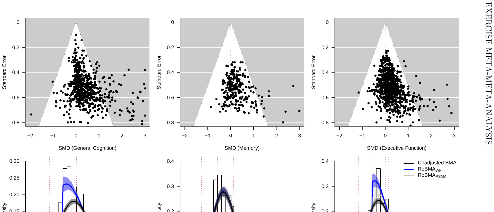
Note: 11, 0, and 4 effect sizes and 1, 14, and 4 z-statistics were out of the plotting range for general cognition, memory, and executive function, respectively. Z-curve plots of RoBMAPSMA and RoBMAWF are nearly identical for general cognition. Z-curve plots of unadjusted BMA and RoBMAPSMA are very similar for executive function.
Importantly, the notably reduced publication bias-adjusted overall estimate (SMD = 0.227 [0.116, 0.330]) supported by extreme evidence for the presence of the effect (Bayes factor in favor of effect, BF10 = 400.6) is of little value due to the extreme between-study heterogeneity ( = 0.647 [0.596, 0.704]). In other words, the prediction interval (i.e., true effect sizes consistent with the data) of the publication bias-adjusted overall estimate covers effect sizes consistent with both large harm and large benefit-sized effects (PI[−1.052, 1.500]). The moderator analysis did not show evidence of moderation by any of our moderators (population type, population age, exercise intensity, exercise category, or intervention duration), most likely due to variation in between-study heterogeneity across the moderator levels. Therefore, we performed subgroup analyses by population type, population age, and exercise category.
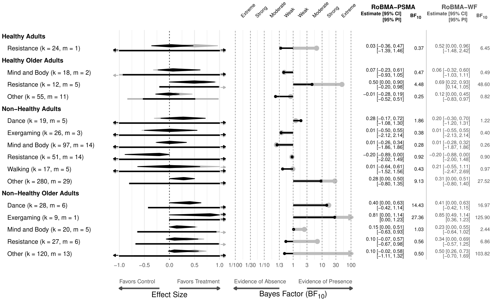
Note: Diamonds represent the pooled effect size estimates, rectangles represent the prediction interval. RoBMAPSMA (black) corresponds to the default settings of RoBMA and RoBMAWF (grey) corresponds to the weight function only version of RoBMA, k denotes the number of estimates and m denotes the number of meta-analyses.
Figure 2 summarizes the results of subgroup analyses across populations and exercise categories. In healthy adults, the results show an extreme degree of between-study heterogeneity in the effect of resistance training on general cognition with prediction intervals consistent with both large harm and large benefit-sized effects. In healthy older adults, the effect of resistance training on general cognition seems to be less heterogeneous. RoBMAWF shows a positive only prediction interval and we find moderate to very strong evidence in favor of the effect. The remaining exercise categories show an extreme degree of between-study heterogeneity and weak to moderate evidence against the pooled effect. In non-healthy adults, the effect of all exercise categories on general cognition is extremely heterogeneous, with moderate to strong evidence for the presence of the pooled effect in the other category. In non-healthy older adults, there seems to be moderate to strong and strong to extreme evidence for the pooled effect of both dance and exergaming on general cognition. For exergaming, the prediction interval is consistent with positive effects only; however, the result is based on only 9 studies from a single meta-analysis. The remaining exercise categories are extremely heterogeneous, with a considerable discrepancy between RoBMAPSMA and RoBMAWF results for the other exercise category due to potential small-study effects.
Memory
A total of 319 effect sizes from 40 (out of 62) meta-analyses of exercise on memory were extracted. A three-level publication bias-unadjusted BMA meta-analysis reproduced an overall effect size estimate (SMD = 0.225 [0.171, 0.281]) similar to the publication bias-unadjusted effect size estimate (SMD = 0.26 [0.20, 0.32]) reported by Singh et al., 2025. The middle panel in the second row of Figure 1 does not show a notable selection for statistically significant or positive results. This is reflected in the inconsistent results of RoBMAPSMA and RoBMAWF publication bias-adjusted results. While RoBMAPSMA finds strong evidence for publication bias operating via inflated results in small studies (BFbias = 19.4; consistent with small-study effects), RoBMAWF finds extreme evidence against publication bias operating via selection for significance or direction of the results (BFbias = 1/45.5).
The publication bias-adjusted overall estimate under RoBMAWF (SMD = 0.225 [0.171, 0.281]) is supported by extreme evidence for the presence of the effect (BF10 > ) and matches the publication bias-unadjusted estimate; however, the publication bias-adjusted overall estimate under RoBMAPSMA is shrunken towards zero (SMD = 0.027 [0.000, 0.227]) with moderate evidence against the presence of the effect (BF10 = 1/3.79). Both models find substantial between-study heterogeneity ( = 0.271 [0.228, 0.318], = 0.268 [0.224, 0.316]), resulting in very wide prediction intervals consistent with both medium harm and medium benefit-sized effects (PI[−0.311, 0.763], PI[−0.514, 0.574]; under RoBMAWF and RoBMAPSMA respectively). The moderator analysis revealed extreme and strong evidence for moderation by the exercise category.
Figure 3 summarizes the results of subgroup analyses across populations and exercise categories. In healthy adults, the results show an extreme degree of between-study heterogeneity in the effect of other exercises on memory (prediction intervals are consistent with both large harm and large benefit-sized effects). In other populations, the results show a substantially lower degree of heterogeneity, which is summarized in the much narrower prediction intervals. In healthy older adults, only the other exercise category shows moderate evidence in favor of the pooled effect. In non-healthy adults, the effect of resistance, walking, and other exercises on memory is consistent with moderate to strong evidence of no benefit. The only exercise category supported by at least weak evidence in favor of the effect is dance. In non-healthy older adults, the effect of dance on memory is also supported by weak to moderate evidence, alongside the other exercise category.
Executive function
A total of 1,085 effect sizes from 91 (out of 117) meta-analyses of exercise on executive function were extracted. A three-level publication bias-unadjusted BMA meta-analysis reproduced an overall effect size estimate (SMD = 0.256 [0.211, 0.302]) consistent with the publication bias-unadjusted effect size estimate (SMD = 0.24 [0.21, 0.27]) reported by Singh et al., 2025. Again, the right panel in the second row of Figure 1 highlights that the publication bias-unadjusted meta-analysis (black density) misfits the observed distribution of test statistics. The publication bias-adjusted
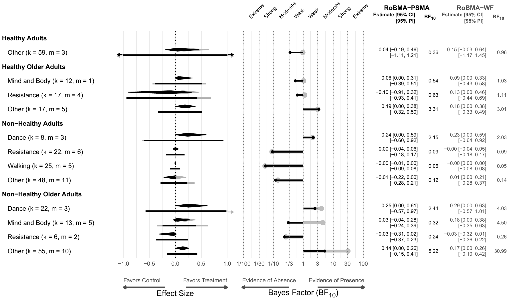
meta-analysis (blue density) approximates the observed distribution of test statistics to a much better degree, which is further confirmed by extreme evidence of publication bias (BFbias > ) regardless of the publication bias-adjustment model. RoBMAPSMA results in stronger adjustment driven by potential small-study effects; however, RoBMAWF finds notable suppression of statistically non-significant results (relative probability of publishing negative results = 0.311 [0.279, 0.388]).
RoBMAWF provides a publication bias-adjusted estimate to approximately 50% of the original estimate (SMD = 0.116 [0.000, 0.184]) supported by strong evidence for the presence of the effect (BF10 = 15.9). However, RoBMAPSMA shrinks the publication bias-adjusted overall estimate towards zero (SMD = 0.012 [0.000, 0.147]) with moderate evidence against the presence of the effect (BF10 = 1/6.41). Importantly, both models again find substantial between-study heterogeneity ( = 0.377 [0.344, 0.416], = 0.311 [0.279, 0.388]), resulting in very wide prediction intervals consistent with both medium harm and large benefit-sized effects (PI[−0.632, 0.861], PI[−0.598, 0.637]; under RoBMAWF and RoBMAPSMA respectively). The moderator analysis revealed extreme evidence for moderation by the population type.
Figure 4 summarizes the results of subgroup analyses across populations and exercise categories. In healthy children and adolescents, the results show moderate to strong evidence against the effect of any exercise category on executive function, however, both the dance and other exercise categories show substantial between-study heterogeneity. In healthy adults, the results show moderate evidence against the effect of other exercise category on executive function with low between-study heterogeneity. In healthy older adults, the effects of exercise categories show substantial between-study heterogeneity with moderate evidence against the effect on executive function, apart from the mind and body exercise category, which shows weak to moderate evidence for the presence of the effect. In non-healthy children and adolescents, the results show moderate evidence for the effect of exergaming on executive function with mostly positive prediction interval. The other
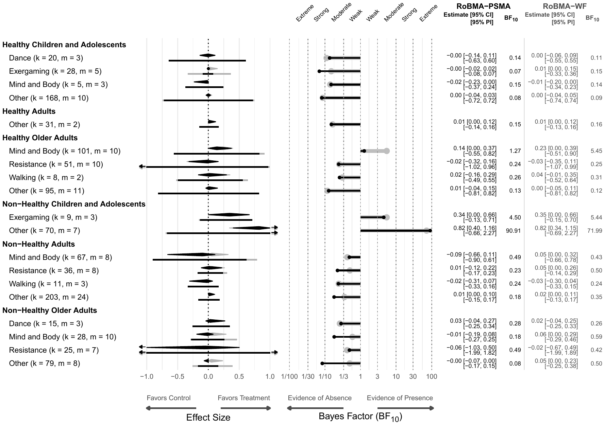
exercise category shows very strong evidence for the effect; however, it is accompanied by extreme between-study heterogeneity consistent with medium harm and large benefit-sized effects. In non-healthy adults, there is weak to moderate evidence against the effect of all exercise categories on executive function. The estimates seem to be mostly homogeneous except the mind and body exercise category. In non-healthy older adults, there is weak to strong evidence against the effect of all exercise categories on executive function. The estimates also seem to be homogeneous except for the resistance training exercise category.
Meta-analysis-level re-analysis
To evaluate the impact of publication bias on the previously reported results, we re-examined the individual meta-analyses included in the meta-meta-analysis with the publication bias-unadjusted BMA meta-analysis and both publication bias-adjusted models (RoBMAPSMA and RoBMAWF). Figure 5 summarizes the results of individual meta-analyses, each meta-analysis is visualized as a point with size corresponding to the number of estimates.
The first row of Figure 5 visualizes evidence in favor of the presence (or absence) of publication bias in each meta-analysis when analyzed with RoBMAWF and RoBMAPSMA. We find that each meta-analysis rarely results in strong evidence for either the presence or absence of publication bias, especially when examining the smaller meta-analyses. Nevertheless, even the more conservative test specifying only weight function publication bias-adjustment RoBMAWF results in strong evidence for the presence of publication bias (BFbias > 10) in 5 out of 32 meta-analyses on general cognition, 0 out of 10 meta-analyses on memory, and 6 out of 40 meta-analyses on executive function with at least 10 primary studies. Furthermore, RoBMAPSMA finds strong evidence for the presence of publication bias in 10 out of 32 meta-analyses on general cognition, 0 out of 10 meta-analyses on memory, and 10 out of 40 meta-analyses on executive function. Figures S1, S2, and S3 in the Online Supplements show additional details for each meta-analysis, highlighting that
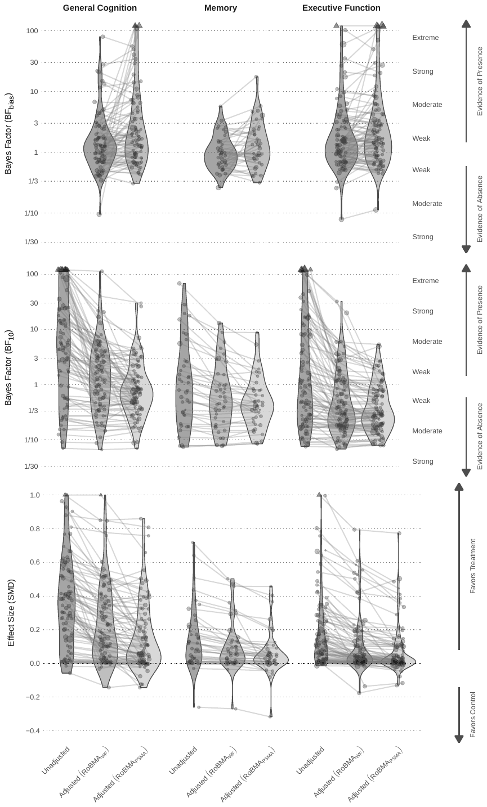
only larger meta-analyses produce sufficient evidence for publication bias.
The second row of Figure 5 visualizes evidence in favor of the presence (or absence) of the pooled effect in each meta-analysis. Interestingly, several meta-analyses find evidence against the effect even prior to any publication bias adjustment: 2 meta-analyses on general cognition, 3 meta-analyses on memory, and 4 meta-analyses on executive function (the first violins). The largest decrease in the evidence for the effect seems to occur already with the weight function only adjustment RoBMAWF, however, RoBMAPSMA often finds even less evidence for the presence of the effect. While the publication bias-unadjusted BMA meta-analysis finds strong evidence for the presence of the effect (BF10 > 10) in 22 out of 32 meta-analyses on general cognition, 2 out of 10 meta-analyses on memory, and 13 out of 40 meta-analyses on executive function with at least 10 primary studies, the weight function only publication bias adjustment RoBMAWF already decreases the number of meta-analyses with strong evidence in favor of the effect to 3 out of 32 meta-analyses on general cognition, 1 out of 10 meta-analyses on memory, and 1 out of 40 meta-analyses on executive function respectively. The further publication bias adjustment with RoBMAPSMA results in no meta-analysis with at least 10 estimates and strong evidence in favor of the effect. Figures S4, S5, and S6 in the Online Supplements show additional details for each meta-analysis and document the predominant absence of evidence or the evidence of absence of the pooled effect at the meta-analysis level.
The third row of Figure 5 visualizes the pooled effect size estimates from each meta-analysis. The largest effect size correction occurs in meta-analyses on general cognition, already with the more conservative weight function publication bias adjustment RoBMAWF. Specifically, the distribution of publication bias-unadjusted pooled effect size estimates decreases from the median (interquartile range) SMD = 0.36 (0.14, 0.55) to median SMD = 0.17 (0.04, 0.37) when applying RoBMAWF, and further to median SMD = 0.10 (0.01, 0.26) with RoBMAPSMA. For meta-analyses on memory, the distribution of pooled effect size estimates decreases from the publication bias-unadjusted median SMD = 0.11 (0.02, 0.26) to median SMD = 0.04 (0.01, 0.15) when applying RoBMAWF, and further to median SMD = 0.02 (0.00, 0.10) with RoBMAPSMA. Finally, for meta-analyses on executive function, the distribution of pooled effect size estimates decreases from the publication bias-unadjusted median of SMD = 0.10 (0.02, 0.22) to median SMD = 0.06 (0.01, 0.14) when applying RoBMAWF, and further to median SMD = 0.03 (0.00, 0.09) with RoBMAPSMA. Figures S7, S8, and S9 in the Online Supplements summarize the meta-analysis specific estimates.
Discussion
This study-level meta-meta-analysis examined the effects of exercise on general cognition, memory, and executive function across populations and exercise categories. Analysis of 215 meta-analyses with a total of 2,239 effect size estimates revealed substantial publication bias and extreme between-study heterogeneity. Across thousands of trials, the average benefit corresponds to roughly a quarter of a standard deviation in general cognition and diminishes to zero for memory and executive function; however, these averages mask extreme between-study heterogeneity. A fine-grained, publication bias-adjusted analysis by population and exercise category indicated that only a few interventions show promising evidence for positive effects on cognition. Given the magnitude of publication bias and heterogeneity, strong recommendations that exercise improves cognition are not warranted.
Our results extend the previous findings of Ciria et al. (2023), who performed an umbrella review of 24 meta-analyses of exercise on cognition and identified substantial issues in the published literature. Our pooled publication bias-adjusted effect size estimates (general cognition: SMD = 0.227 [0.116, 0.330]; memory: SMD = 0.027 [0.000, 0.227]; executive function: SMD = 0.012 [0.000, 0.147]) are shrunk to a similar degree as the pooled adjusted estimate (SMD = 0.05 [−0.09, 0.14]) reported by Ciria et al. (2023). Our results also align with the recent large meta-analysis of acute exercise on cognition in young adults, which found only minimal effects (SMD = 0.13, ±0.04) and a comparable degree of extreme between-study heterogeneity (Garrett et al., 2024). Although general cognition intuitively appears to subsume domains such as memory and executive function, in the underlying literature, it is treated as a distinct construct, typically assessed using composite screening measures (e.g., MMSE, MoCA) in older or clinical samples. These measures often yield larger effects than domain-specific tests, reflecting both differences in measurement and selective reporting rather than a contradiction between the results. Importantly, the extreme heterogeneity in the existing literature cannot be ignored; in fact, the results are often consistent with both large harm and large benefit-sized effects. As such, the pooled effects provide little information on their own and should be interpreted with extreme caution.
The extent of between-study heterogeneity and publication bias cannot be evaluated when combining meta-analytic summary estimates rather than study-level estimates, as done in Singh et al. (2025). Their meta-analysis-level synthesis provided a valuable overview of the literature but, by design, could not fully capture variability and publication bias among individual trials. Consequently, the pooled effects reported (general cognition: SMD = 0.42, [0.37, 0.47]; memory: SMD = 0.26, [0.20, 0.32]; executive function: SMD = 0.24, [0.21, 0.27]) appear larger and more precise than those obtained from our study-level re-analysis. We therefore suggest interpreting the description of “strong evidence . . . across all populations” (Singh et al., 2025, abstract) in light of our finding that the underlying effects are considerably more heterogeneous at the study level.
To disentangle the extreme between-study heterogeneity, we performed population- and exercise category-specific subgroup analyses. While the majority of subgroup analyses resulted in the absence of evidence, several subgroups showed promising evidence in favor of an effect. For general cognition, results indicated benefits of resistance training for healthy older adults and dance and exergaming for non-healthy older adults. For memory, results indicated benefits of dance for both healthy and non-healthy older adults. For executive function, results indicated benefits of exergaming for non-healthy children and adolescents. In some populations, other exercises that do not fit into any of the major categories showed potential; however, they exhibited highly heterogeneous benefits. Conversely, several subgroup analyses revealed moderate to strong evidence against an effect. For memory, results indicated evidence of no benefit of resistance training for non-healthy adults and non-healthy older adults, as well as evidence of no benefit of walking for non-healthy adults. For executive function, results indicated evidence of no benefit of exergaming and mind and body exercise for healthy children and adolescents, evidence of no benefit of resistance training and walking for non-healthy adults, and evidence of no benefit of mind and body exercise for non-healthy older adults.
Re-examination of the original meta-analyses showed notable publication bias and a severe decrease in evidence favoring the effect, paralleling the decline in pooled effect size estimates. These results are consistent with previous meta-epidemiological assessments of psychological and medical literature (see e.g., Bartoš et al., 2024; Fanelli, 2012; Fanelli et al., 2017). Future meta-analyses should therefore report publication bias-adjusted estimates, a practice currently adopted by only a minority of studies (Ciria et al., 2023; Wu et al., 2025). Furthermore, future meta-meta-analyses should utilize study-level estimates to apply publication bias adjustment and accurately assess between-study heterogeneity. This heterogeneity should be described by either the absolute heterogeneity estimate or prediction intervals, as the commonly reported relative metric often conceals the true degree of between-study heterogeneity (Borenstein et al., 2017; Borenstein, 2024; Rücker et al., 2008).
Despite the scale of the current meta-meta-analysis, several limitations should be acknowledged. First, we extracted study-level estimates as reported in the original meta-analyses; it is therefore possible that we propagated errors and suboptimal choices (such as not computing estimates adjusted for pre-treatment measurement, Ciria et al., 2023) present in the existing literature. Second, we were unable to track the origin of all extracted study-level estimates. While it is possible some estimates were included multiple times, the degree of overlap is likely less than 1% based on the assessment by Singh et al. (2025). Third, the observed distribution of test statistics indicated a higher skew near the significance criterion than expected under publication bias alone. This may indicate questionable research practices (QRPs, John et al., 2012), which can result in over- or under-adjusted pooled effect size estimates (Bartoš et al., 2022; Irsova et al., 2025; Mathur, 2024). Finally, our investigation was limited to empirical evidence from randomized controlled trials; see Ciria et al. (2023), Dupuy et al. (2024), and Ciria et al. (2024) for detailed discussions on theoretical models, animal models, and neurobiological mechanisms.
In summary, this extensive study-level meta-meta-analysis demonstrates insufficient evidence to recommend exercise unconditionally for cognitive benefits. While we found promising evidence for specific exercise categories and populations (alongside evidence against benefits for others), the substantial heterogeneity precludes any general recommendations. As such, more specific recommendations regarding exercise categories for specific populations are needed with respect to cognitive benefits. Our findings should not dissuade individuals from exercising, as there are many other benefits associated with regular exercise.
Declarations
Data Availability Statement
Code and data are available at Open Science Framework: https://osf.io/egfzt
Funding
František Bartoš acknowledges support from the Czech Science Foundation (grant no. 23-05227M).
Acknowledgments
Computational resources were provided by the e-INFRA CZ project (ID:90254), supported by the Ministry of Education, Youth and Sports of the Czech Republic.
Conflict of Interest
None.
Contributions
Conceptualization: FB; Data curation: ML, KB, KH, KK; Formal analysis: FB; Funding acquisition: ZI, TH; Investigation: FB, ML, KB, KH, KK, ZI, TH; Methodology: FB; Project administration: ZI, TH; Resources: ML, KB, KH, KK; Software: FB; Supervision: FB, ZI, TH; Visualization: FB; Writing – original draft: FB; Writing – review & editing: FB, ML, KB, KH, KK, ZI, TH
Methods
Literature search, inclusion, and exclusion criteria
This project extends the just-published meta-meta-analysis by Singh et al. (2025) and therefore relies on its search, screening, and inclusion procedures. The meta-meta-analysis’s inclusion criteria were based on the following population, intervention, comparison, outcomes, and study type (PICOS) criteria (adopted from page 2 of Singh et al., 2025):
• Population: any human population (children, adolescents, adults; healthy and clinical).
• Intervention: Reviews that evaluated exercise interventions were included. The following definition of exercise was used: ‘a type of physical activity consisting of planned, structured and repetitive bodily movement done to improve and/or maintain physical fitness’. Reviews were included if ≥ 75% of the included RCTs focused solely on exercise, including (but not limited to) aerobic or resistance exercise, yoga, dance, Tai Chi and exergames, which were not combined with any other intervention. Reviews evaluating regular exercise training of at least 4 weeks were included irrespective of exercise mode, supervision, delivery, intensity or weekly duration.
• Comparator: reviews were eligible if ≥ 75% of the included RCTs compared exercise to no intervention, waitlist, usual care, nothing, a sham intervention, an equal attention non-exercise intervention arm or a lower/lesser exercise intervention.
• Outcomes: any assessment of general cognition, memory or executive function.
• Study type: systematic reviews that included meta-analyses. Reviews were excluded if they included any nonRCTs or studies assessing single bouts of exercise.
As described in Singh et al. (2025), the included databases were “CINAHL, The Cochrane Library, Embase via OVID, MEDLINE via OVID, Emcare via OVID, ProQuest Central, ProQuest Nursing and Allied Health Source, PsycINFO, Scopus, Sport Discus via Ebscohost and Web of Science using subject heading, keyword and MeSH term searches for ‘systematic review’, ‘meta-analysis’, ‘cognitive function’, ‘memory’, ‘executive function’, and ‘exercise”’ (p. 2). The original database search was limited to peer-reviewed journal articles published in English-language up to 1 November 2023. See Online Supplements of Singh et al. (2025) search strategy details. See Figure 1 in Singh et al. (2025) for PRISMA flowchart detailing the search, inclusion, and exclusion criteria resulting in 133 included studies.
Data extraction
We manually extracted study-level effect sizes and standard errors (or other information required for their computation, such as confidence intervals or summary statistics) from all meta-analyses (from study information tables, forest plots, and online supplementary materials) included in eFigure 1, 2, and 3 in the Supplementary Materials of Singh et al. (2025). The necessary information was available for 217 out of the 286 meta-analyses (with 2,312 estimates) reported by Singh et al. (2025).
The correctness of the extracted study-level estimates was assessed by comparing the pooled meta-analytic estimates reported in Singh et al. (2025) to the pooled meta-analytic estimates re-computed from the study-level estimates (the closest pooled estimate from either a fixed-effect meta-analysis or a random-effects meta-analysis with restricted maximum likelihood, maximum likelihood, and the DerSimonian-Laird estimator implemented in the metafor R package Viechtbauer, 2010). The absolute difference between the reported and the closest re-computed pooled estimate was lower than SMD = 0.02 for 201 meta-analyses, between SMD = 0.02 and SMD = 0.05 for 8 meta-analyses, and between SMD = 0.05 and SMD = 0.10 for 3 meta-analyses. All meta-analyses with absolute differences larger than SMD = 0.05 were re-examined. Following the re-examination, 2 meta-analyses were completely removed due to inconsistent reporting. In total, 215 meta-analyses containing 2,239 effect size estimates were retained for the analysis.
In addition, we extracted information about the population type (healthy vs non-healthy), population age (children and adolescents, adults, and older adults), intervention duration (from days to years), exercise intensity (low and moderate or low, moderate, and high), and exercise types from eTable 3 from the Supplementary Materials of Singh et al. (2025). Since many meta-analyses included multiple exercise types, we attempted to extract the specific exercise types for each study-level estimate within each meta-analysis that involved multiple exercise types. The extracted exercise types were classified into the following categories: dance (126 estimates), exergaming (90 estimates), mind and body (exercises described as including tai-chi, yoga, baduanjin, etc., 377 estimates), resistance (exercises described as including ‘resistance’ or ‘strength’, 274 estimates), walking (94 estimates), and other (all estimates not matching any of the previous categories, 1278 estimates).
Statistical analysis
All analyses were performed on standardized mean differences (either Cohen’s or Hedge’s ) as reported in the original meta-analysis. For 422 studies, both effect sizes and standard errors were directly available. For 1,828 studies, standard errors were computed using a normal approximation based on the confidence interval width. For 62 studies, standard errors were computed from the effect size and total sample size under the assumption of equal group sizes (Equation 4.20 Borenstein et al., 2009).
Analytical framework
Throughout the manuscript, we present results from three types of meta-analytic ensembles: publication bias-unadjusted Bayesian model-averaged meta-analysis (Bartoš et al., 2021; Berkhout et al., 2023; Gronau et al., 2021) and two versions of publication bias-adjusted robust Bayesian meta-analysis (RoBMA, Bartoš et al., 2022; Maier et al., 2023). All three meta-analytic models employ Bayesian model averaging (BMA, Fragoso et al., 2018; Hoeting et al., 1999) to account for model uncertainty. In other words, instead of specifying a single meta-analytic model, BMA allowed us to specify a set of plausible meta-analytic models. The specified models are compared on the observed data based on their prior predictions; models that predicted the data well receive an increase in their posterior probability, while models that predicted the data poorly suffer a decline (see e.g., Hinne et al., 2020, for an accessible introduction). Importantly, no model is completely excluded from the inference; as such, the model uncertainty is retained when interpreting the results (see e.g., Wagenmakers et al., 2022).
Parameter estimates, e.g., the pooled effect () or between-study heterogeneity (), are obtained by combining the posterior distributions across all models proportionally to their posterior model probabilities. As such, all reported estimates in the manuscript correspond to model-averaged posterior estimates [95% central credible intervals] as defined in Equation 11 in Bartoš et al. (2022). The main advantage of the model-averaged posterior estimates is that they incorporate uncertainty about the most appropriate data-generating model. Even if the true data-generating model is not part of the specified models, the model-averaged posterior distribution minimizes the Kullback–Leibler divergence to the true model (Kleijn & van der Vaart, 2006).
Hypothesis tests, e.g., the Bayes factor (Jeffreys, 1931; Kass & Raftery, 1995) for the presence of the effect (BF10), heterogeneity (BFrf) or publication bias (BFbias), are obtained by comparing the relative predictive performance of the set of models assuming the presence of the effect (or heterogeneity/publication bias) to the set of models assuming the absence of the effect (or heterogeneity/publication bias), i.e., the inclusion Bayes factor (e.g., Hinne et al., 2020) as defined in Equation 10 in Bartoš et al. (2022). The main advantage of Bayes factors is that they allow us to directly interpret the strength of evidence and distinguish the evidence of absence from the absence of evidence (e.g., Keysers et al., 2020). We follow the rules of thumb introduced in Appendix I of Jeffreys (1939) and on page 105 of Lee and Wagenmakers (2005) when interpreting Bayes factors.
Meta-analytic ensembles
The publication bias–unadjusted Bayesian model-averaged meta-analysis accounts for uncertainty about the presence or absence of an effect and heterogeneity. It therefore specifies four models: (1) effect present, heterogeneity present; (2) effect present, heterogeneity absent; (3) effect absent, heterogeneity present; and (4) effect absent, heterogeneity absent (see e.g., Gronau et al., 2021).
The publication bias-adjusted RoBMA extends the publication bias-unadjusted model-averaged meta-analysis by also incorporating models that account for publication bias (Maier et al., 2023). We employ the RoBMAPSMA version (Bartoš et al., 2022) that combines two common and well-tested publication bias adjustment methods: selection models (Vevea & Hedges, 1995) and PET-PEESE (Stanley & Doucouliagos, 2014). While selection models directly adjust for selection for statistical significance or direction of the effect, PET-PEESE specifies meta-regressions with either a linear or quadratic standard error term to adjust for effect size inflation in smaller studies. In total, RoBMAPSMA specifies 8 publication bias adjustment models: 6 weight functions that allow for two- and one-sided selection on either statistically significant, marginally significant, or directionally aligned results, PET, and PEESE model (see Bartoš et al., 2022, for details). These 8 models expand the set of previously described 4 models in Bayesian model-averaged meta-analysis, resulting in separate models (8 publication bias adjustments and 1 publication bias unadjusted model type). See Bartoš et al. (2022) and Bartoš, Pawel, and Siepe (2025) for large-scale simulations collected by Hong and Reed (2020) demonstrating the performance of RoBMAPSMA across four independently developed simulation environments: Alinaghi and Reed (2018), Bom and Rachinger (2019), Carter et al. (2019), and Stanley et al. (2017) and empirical examples, including a demonstration of performance in the absence of publication bias by re-analyzing sets of registered replication reports.
As a sensitivity analysis, we present results from RoBMA using only the weight functions for publication bias adjustment (RoBMAWF). Removing the PET-PEESE publication bias adjustment part from RoBMAPSMA allows us to draw conclusions that are insensitive to potential systematic differences in populations and effect sizes. In other words, smaller studies might be conducted on clinical populations and result in a larger benefit, while larger studies might be conducted on the general population and result in a smaller benefit. This pattern of results might be inadvertently identified as small-study effects and consequently over-adjusted for by PET-PEESE (those patterns would not be identified as selection on statistical significance or direction of the effect by selection models). Removal of PET and PEESE models results in RoBMAWF based on separate models (6 publication bias adjustments and 1 publication bias unadjusted model type).
All three meta-analytic ensembles were extended to their meta-regression versions when testing for moderation and multilevel versions when dealing with estimates from different meta-analyses as described in Bartoš, Maier, Stanley, and Wagenmakers (2025) and Bartoš, Maier, and Wagenmakers (2025). All ensembles were estimated using the RoBMA R package (version 3.6.0, Bartoš & Maier, 2020) in R (R Core Team, 2021).
Prior distributions
We specified default prior distributions as described in Bartoš et al. (2022); a standard normal prior distribution for the pooled effect size parameter, , under the alternative hypothesis of the presence of an effect; an empirically informed inverse-gamma distribution for the between-study heterogeneity parameter, (van Erp et al., 2017), under the alternative hypothesis of the presence of between-study heterogeneity; unit cumulative Dirichlet priors for the relative publication probabilities under the publication bias operating via selection models; a unit Cauchy prior distribution for the PET regression coefficient, , under the publication bias operating via the PET model; and a Cauchy prior distribution for the PEESE regression coefficient, , under the publication bias operating via the PEESE model. The null hypotheses were specified via spikes at zero, i.e., and .
Meta-regression used the default prior distributions as described in Bartoš, Maier, Stanley, and Wagenmakers (2025) on the grand mean-difference contrast coding, i.e., marginal prior distribution on the difference between each moderator level and the grand mean . Multilevel meta-analysis used the default uniform prior distribution, as described in Bartoš, Maier, Stanley, and Wagenmakers (2025), on the within/between allocation via a heterogeneity allocation parameter .
The prior model probabilities were set equally across model types, as described in Bartoš et al. (2022). In summary, 50% of the total prior model probability was allocated to models assuming the presence of the effect, 50% of the total prior model probability was allocated to models assuming the absence of between-study heterogeneity, and 50% of the total prior model probability was allocated to models assuming the presence of publication bias. Out of the prior model probability allocated to models assuming publication bias, 50% was equally spread across the 6 weight functions, and 50% was equally spread across PET and PEESE models.
REFERENCES
Some entries below were printed without a link. Where a Crossref record matches one and no other record plausibly could, its DOI is shown; ambiguous references are left as they were printed.
- Alinaghi, N., & Reed, W. R. (2018). Meta-analysis and publication bias: How well does the FAT-PET-PEESE procedure work? Research Synthesis Methods, 9(2), 285–311. https://doi.org/10.1002/jrsm.1298
- Bartoš, F., Gronau, Q. F., Timmers, B., Otte, W. M., Ly, A., & Wagenmakers, E.-J. (2021). Bayesian model-averaged meta-analysis in medicine. Statistics in Medicine, 40(30), 6743–6761. https://doi.org/10.1002/sim.9170
- Bartoš, F., & Maier, M. (2020). RoBMA: An R package for robust Bayesian meta-analyses [R package version 3.6.0]. https://doi.org/10.32614/CRAN.package.RoBMA
- Bartoš, F., Maier, M., Stanley, T. D., & Wagenmakers, E.-J. (2025). Robust Bayesian meta-regression: Model-averaged moderation analysis in the presence of publication bias. Psychological Methods. https://dx.doi.org/10.1037/met0000737
- Bartoš, F., Maier, M., & Wagenmakers, E.-J. (2025). Robust Bayesian multilevel meta-analysis: Adjusting for publication bias in the presence of dependent effect sizes. https://doi.org/10.31234/osf.io/9tgp2_v1
- Bartoš, F., Maier, M., Wagenmakers, E.-J., Doucouliagos, H., & Stanley, T. D. (2022). Robust Bayesian meta-analysis: Model-averaging across complementary publication bias adjustment methods. Research Synthesis Methods, 14(1), 99–116. https://doi.org/10.1002/jrsm.1594
- Bartoš, F., Maier, M., Wagenmakers, E.-J., Nippold, F., Doucouliagos, H., Ioannidis, J. P., Otte, W. M., Sladekova, M., Deresssa, T. K., Bruns, S. B., et al. (2024). Footprint of publication selection bias on meta-analyses in medicine, environmental sciences, psychology, and economics. Research Synthesis Methods, 15(3), 500–511. https://doi.org/10.1002/jrsm.1703
- Bartoš, F., Pawel, S., & Siepe, B. S. (2025). PublicationBiasBenchmark: Benchmark for publication bias correction methods [version 0.1.0]. https://doi.org/10.32614/CRAN.package.PublicationBiasBenchmark
- Bartoš, F., & Schimmack, U. (2025). Z-curve plot: A visual diagnostic for publication bias in meta-analysis. https://doi.org/10.48550/arXiv.2509.07171
- Berkhout, S. W., Haaf, J. M., Gronau, Q. F., Heck, D. W., & Wagenmakers, E.-J. (2023). A tutorial on Bayesian model-averaged meta-analysis in JASP. Behavior Research Methods. https://doi.org/10.3758/s13428-023-02093-6
- Bom, P. R., & Rachinger, H. (2019). A kinked meta-regression model for publication bias correction. Research Synthesis Methods, 10(4), 497–514. https://doi.org/10.1002/jrsm.1352
- Borenstein, M., Higgins, J., Hedges, L., & Rothstein, H. (2017). Basics of meta-analysis: is not an absolute measure of heterogeneity. Research Synthesis Methods, 8(1), 5–18. https://doi.org/10.1002/jrsm.1230
- Borenstein, M. (2024). Avoiding common mistakes in meta-analysis: Understanding the distinct roles of Q, I-squared, tau-squared, and the prediction interval in reporting heterogeneity. Research Synthesis Methods, 15(2), 354–368. https://doi.org/10.1002/jrsm.1678
- Borenstein, M., Hedges, L. V., Higgins, J. P., & Rothstein, H. R. (2009). Introduction to meta-analysis. John Wiley & Sons. 10.1002/9780470743386
- Brodeur, A., Lé, M., Sangnier, M., & Zylberberg, Y. (2016). Star wars: The empirics strike back. American Economic Journal: Applied Economics, 8(1), 1–32. https://doi.org/10.1016/10.1257/app.20150044
- Brunner, J., & Schimmack, U. (2020). Estimating population mean power under conditions of heterogeneity and selection for significance. Meta-Psychology, 4. https://doi.org/10.15626/MP.2018.874
- Bull, F. C., Al-Ansari, S. S., Biddle, S., Borodulin, K., Buman, M. P., Cardon, G., Carty, C., Chaput, J.-P., Chastin, S., Chou, R., et al. (2020). World Health Organization 2020 guidelines on physical activity and sedentary behaviour. British Journal of Sports Medicine, 54(24), 1451–1462. https://doi.org/10.1136/bjsports-2020-102955
- Carter, E. C., Schönbrodt, F. D., Gervais, W. M., & Hilgard, J. (2019). Correcting for bias in psychology: A comparison of meta-analytic methods. Advances in Methods and Practices in Psychological Science, 2(2), 115–144. https://doi.org/10.1177/2515245919847196
- Ciria, L. F., Román-Caballero, R., Vadillo, M. A., Holgado, D., Luque-Casado, A., Perakakis, P., & Sanabria, D. (2023). An umbrella review of randomized control trials on the effects of physical exercise on cognition. Nature Human Behaviour, 7(6), 928–941. https://doi.org/10.1038/s41562-023-01554-4
- Ciria, L. F., Román-Caballero, R., Vadillo, M. A., Holgado, D., Luque-Casado, A., Perakakis, P., & Sanabria, D. (2024). Reply to: Do not underestimate the cognitive benefits of exercise. Nature Human Behaviour, 8(8), 1464–1466. https://doi.org/10.1038/s41562-024-01950-4
- Ding, D., Mutrie, N., Bauman, A., Pratt, M., Hallal, P. R., & Powell, K. E. (2020). Physical activity guidelines 2020: Comprehensive and inclusive recommendations to activate populations. The Lancet, 396(10265), 1780–1782. https://doi.org/10.1016/S0140-6736(20)32229-7
- Dupuy, O., Ludyga, S., Ortega, F. B., Hillman, C. H., Erickson, K. I., Herold, F., Kamijo, K., Wang, C.-H., Morris, T. P., Brown, B., et al. (2024). Do not underestimate the cognitive benefits of exercise. Nature Human Behaviour, 8(8), 1460–1463. https://doi.org/10.1038/s41562-024-01949-x
- Egger, M., Smith, G. D., Schneider, M., & Minder, C. (1997). Bias in meta-analysis detected by a simple, graphical test. BMJ, 315(7109), 629–634. https://doi.org/10.1136/bmj.315.7109.629
- Fanelli, D. (2012). Negative results are disappearing from most disciplines and countries. Scientometrics, 90(3), 891–904. https://doi.org/10.1007/s11192-011-0494-7
- Fanelli, D., Costas, R., & Ioannidis, J. P. (2017). Meta-assessment of bias in science. Proceedings of the National Academy of Sciences, 114(14), 3714–3719. https://doi.org/10.1073/pnas.1618569114
- Fragoso, T. M., Bertoli, W., & Louzada, F. (2018). Bayesian model averaging: A systematic review and conceptual classification. International Statistical Review, 86(1), 1–28. http://dx.doi.org/10.1111/insr.12243
- Garrett, J., Chak, C., Bullock, T., & Giesbrecht, B. (2024). A systematic review and Bayesian meta-analysis provide evidence for an effect of acute physical activity on cognition in young adults. Communications psychology, 2(1), 82. https://doi.org/10.1038/s44271-024-00124-2
- Gronau, Q. F., Heck, D. W., Berkhout, S. W., Haaf, J. M., & Wagenmakers, E.-J. (2021). A primer on Bayesian model-averaged meta-analysis. Advances in Methods and Practices in Psychological Science, 4(3), 1–19. https://doi.org/10.1177%5C%2F25152459211031256
- Hinne, M., Gronau, Q. F., van den Bergh, D., & Wagenmakers, E.-J. (2020). A conceptual introduction to Bayesian model averaging. Advances in Methods and Practices in Psychological Science, 3(2), 200–215. https://doi.org/10.1177/2515245919898657
- Hoeting, J. A., Madigan, D., Raftery, A. E., & Volinsky, C. T. (1999). Bayesian model averaging: A tutorial. Statistical Science, 14(4), 382–401. https://doi.org/10.1214/SS%5C%2F1009212519
- Hong, S., & Reed, W. R. (2020). Using Monte Carlo experiments to select meta-analytic estimators. Research Synthesis Methods, 12(2), 192–215. https://doi.org/10.1002/jrsm.1467
- Irsova, Z., Bom, P. R. D., Havranek, T., & Rachinger, H. (2025). Spurious precision in meta-analysis of observational research. Nature Communications, 16, 8454. https://doi.org/10.1038/s41467-025-63261-0 Full text on this site
- Jeffreys, H. (1931). Scientific inference. Cambridge University Press.
- Jeffreys, H. (1939). Theory of probability (1st Edition). Oxford University Press.
- John, L. K., Loewenstein, G., & Prelec, D. (2012). Measuring the prevalence of questionable research practices with incentives for truth telling. Psychological Science, 23(5), 524–532. https://doi.org/10.1177/0956797611430953
- Kass, R. E., & Raftery, A. E. (1995). Bayes factors. Journal of the American Statistical Association, 90(430), 773–795. https://doi.org/10.1080/01621459.1995.10476572
- Keysers, C., Gazzola, V., & Wagenmakers, E.-J. (2020). Using Bayes factor hypothesis testing in neuroscience to establish evidence of absence. Nature Neuroscience, 23, 788–799. https://doi.org/10.1038/s41593-020-0660-4
- Kleijn, B. J., & van der Vaart, A. W. (2006). Misspecification in infinite-dimensional Bayesian statistics. Annals of Statistics, 34(2), 837–877. https://doi.org/10.1214/009053606000000029
- Lee, M. D., & Wagenmakers, E.-J. (2005). Bayesian statistical inference in psychology: Comment on Trafimow (2003). Psychological Review, 112, 662–668. https://doi.org/10.1037/0033-295X.112.3.662
- Maier, M., Bartoš, F., & Wagenmakers, E.-J. (2023). Robust Bayesian meta-analysis: Addressing publication bias with model-averaging. Psychological Methods, 28(1), 107–122. 10.1037/met0000405
- Mathur, M. B. (2024). P-hacking in meta-analyses: A formtimating the false discovery risk oods. Research Synthesis Methods, 15(3), 483–499. https://doi.org/10.1002/jrsm.1701
- Piercy, K. L., Troiano, R. P., Ballard, R. M., Carlson, S. A., Fulton, J. E., Galuska, D. A., George, S. M., & Olson, R. D. (2018). The physical activity guidelines for Americans. JAMA, 320(19), 2020–2028. https://doi.org/10.1001/jama.2018.14854
- R Core Team. (2021). R: A language and environment for statistical computing. R Foundation for Statistical Computing. Vienna, Austria. https://www.R-project.org/
- Rücker, G., Schwarzer, G., Carpenter, J. R., & Schumacher, M. (2008). Undue reliance on in assessing heterogeneity may mislead. BMC Medical Research Methodology, 8, 79. https://doi.org/10.1186/1471-2288-8-79
- Sallis, J. F., Cerin, E., Conway, T. L., Adams, M. A., Frank, L. D., Pratt, M., Salvo, D., Schipperijn, J., Smith, G., Cain, K. L., et al. (2016). Physical activity in relation to urban environments in 14 cities worldwide: A cross-sectional study. The Lancet, 387(10034), 2207–2217. https://doi.org/10.1016/S0140-6736(15)01284-2
- Singh, B., Bennett, H., Miatke, A., Dumuid, D., Curtis, R., Ferguson, T., Brinsley, J., Szeto, K., Petersen, J. M., Gough, C., et al. (2025). Effectiveness of exercise for improving cognition, memory and executive function: A systematic umbrella review and meta-meta-analysis. British Journal of Sports Medicine, 59(12), 866–876. https://doi.org/10.1136/bjsports-2024-108589
- Stanley, T. D., & Doucouliagos, H. (2014). Meta-regression approximations to reduce publication selection bias. Research Synthesis Methods, 5(1), 60–78. https://doi.org/10.1002/jrsm.1095
- Stanley, T. D., Doucouliagos, H., & Ioannidis, J. P. (2017). Finding the power to reduce publication bias. Statistics in Medicine, 36(10), 1580–1598. https://doi.org/10.1002/sim.7228
- Sterne, J. A., Sutton, A. J., Ioannidis, J. P., Terrin, N., Jones, D. R., Lau, J., Carpenter, J., Rücker, G., Harbord, R. M., Schmid, C. H., et al. (2011). Recommendations for examining and interpreting funnel plot asymmetry in meta-analyses of randomised controlled trials. BMJ, 343. https://doi.org/10.1136/bmj.d4002
- van Erp, S., Verhagen, J., Grasman, R. P., & Wagenmakers, E.-J. (2017). Estimates of between-study heterogeneity for 705 meta-analyses reported in Psychological Bulletin from 1990–2013. Journal of Open Psychology Data, 5(1), Article 4. http://doi.org/10.5334/jopd.33
- van Zwet, E. W., & Cator, E. A. (2021). The significance filter, the winner's curse and the need to shrink. Statistica Neerlandica. https://doi.org/10.1111/stan.12241
- Vevea, J. L., & Hedges, L. V. (1995). A general linear model for estimating effect size in the presence of publication bias. Psychometrika, 60(3), 419–435. https://doi.org/10.1007/BF02294384
- Viechtbauer, W. (2010). Conducting meta-analyses in R with the metafor package. Journal of Statistical Software, 36(3), 1–48. https://www.jstatsoft.org/v36/i03/
- Wagenmakers, E.-J., Sarafoglou, A., & Aczel, B. (2022). One statistical analysis must not rule them all. Nature, 605(7910), 423–425. https://doi.org/10.1038/d41586-022-01332-8
- Wu, W., Duan, J., Reed, W. R., & Tipton, E. (2025, April). What can we learn from 1000 meta-analyses across 10 different disciplines? (Working Papers in Economics No. 25/07). University of Canterbury, Department of Economics and Finance. https://ideas.repec.org/p/cbt/econwp/25-07.html
Online Supplements
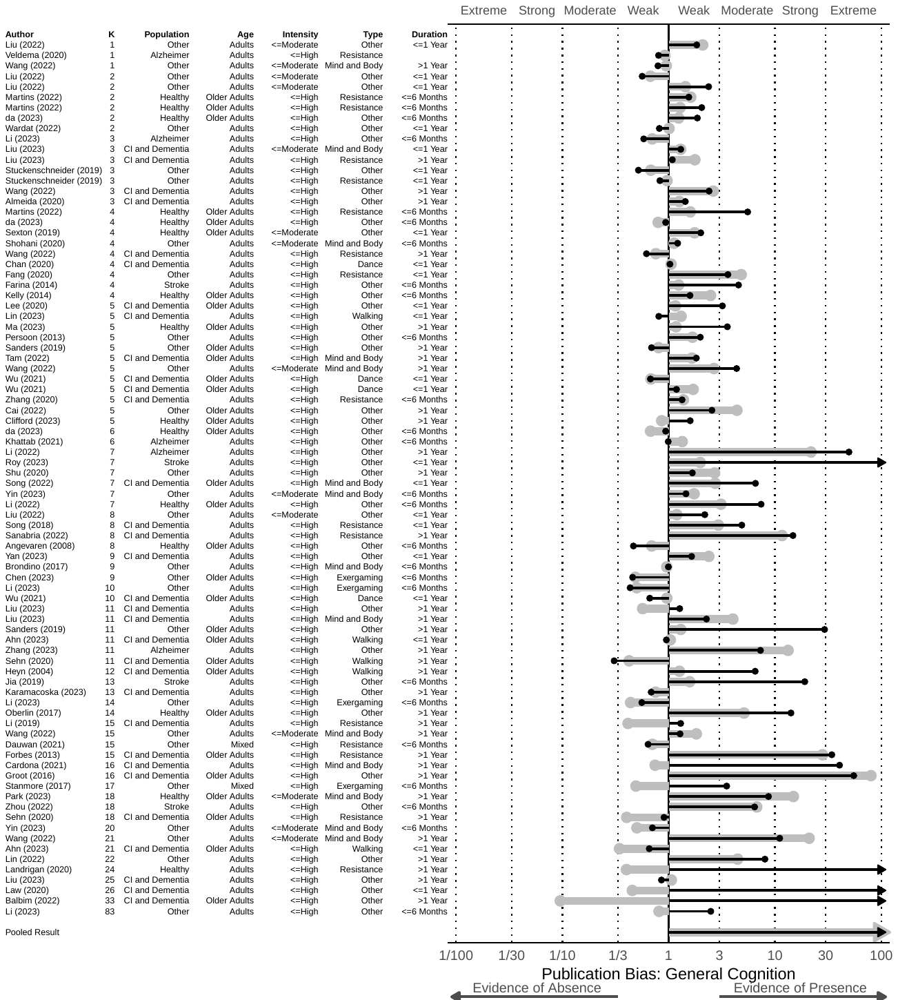
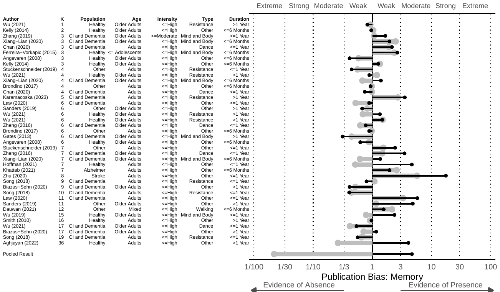
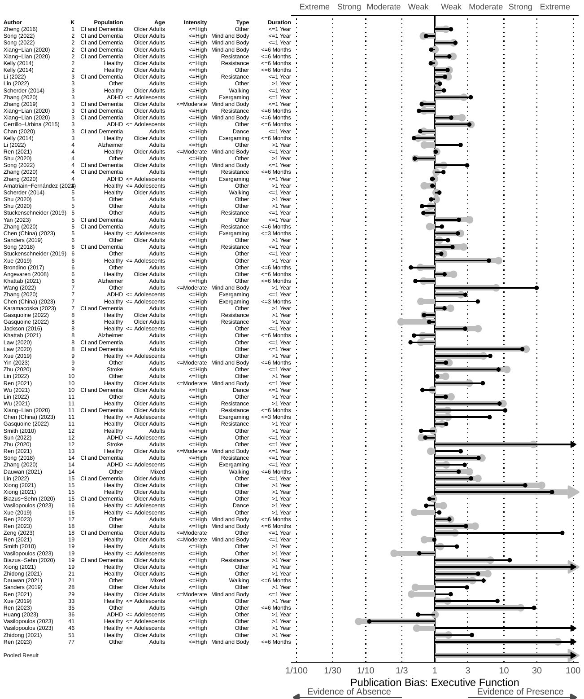
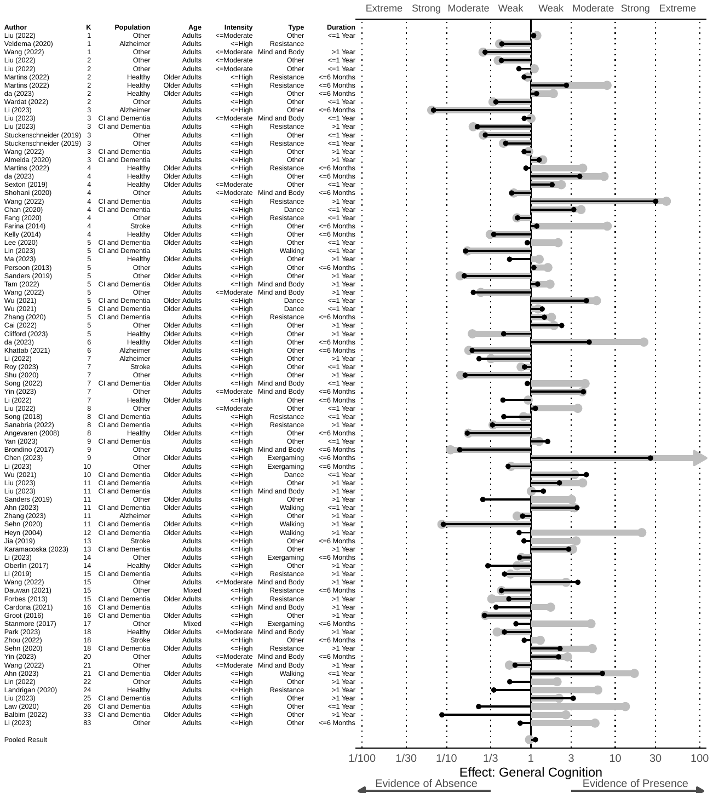
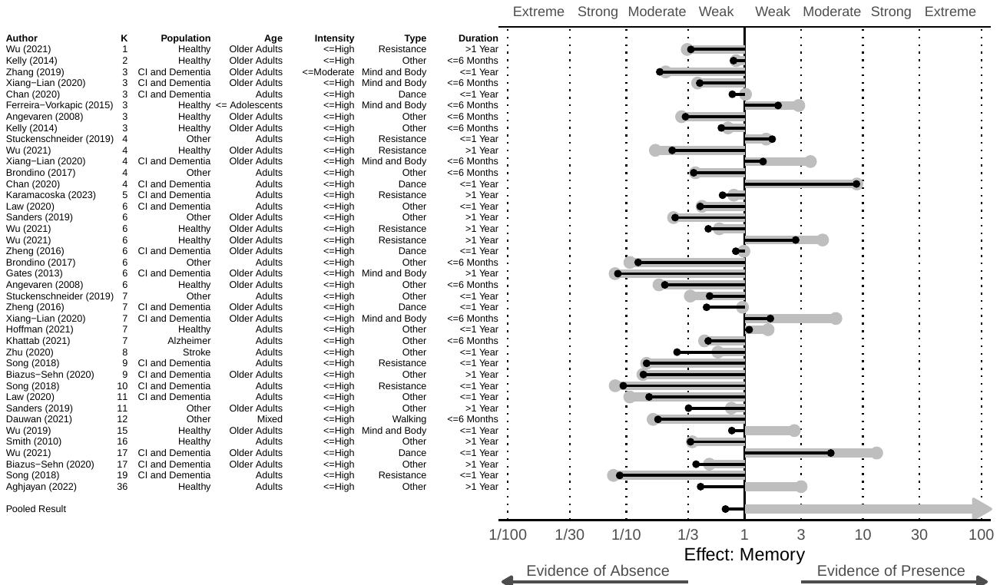
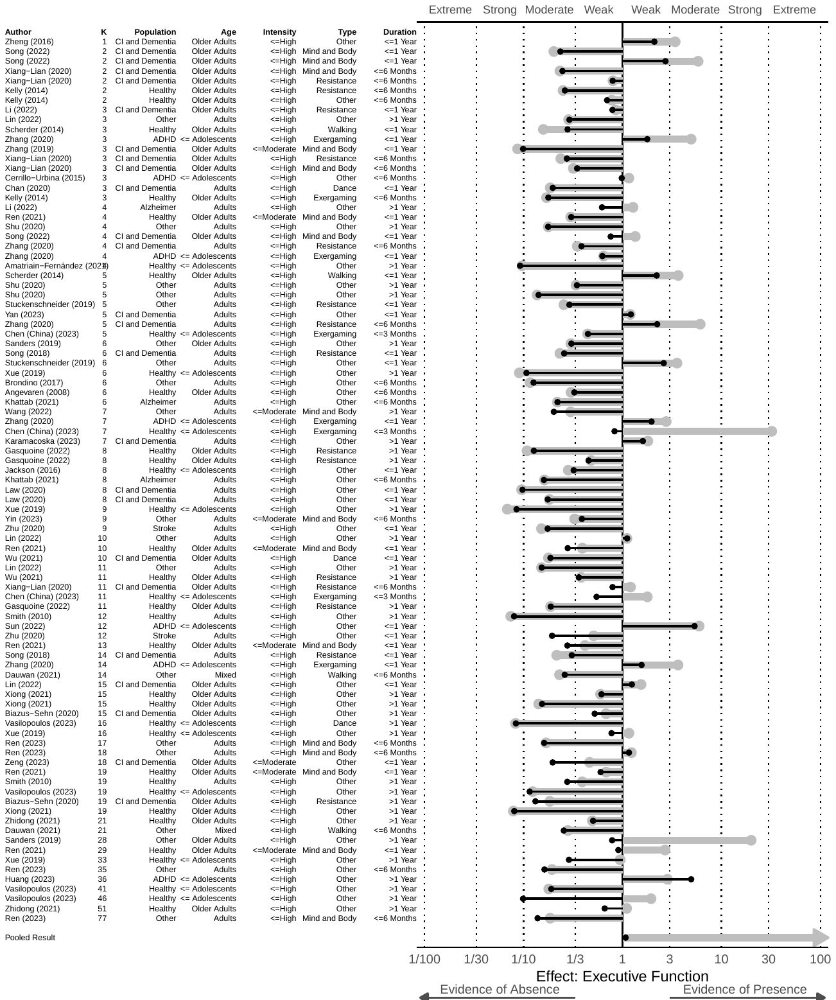
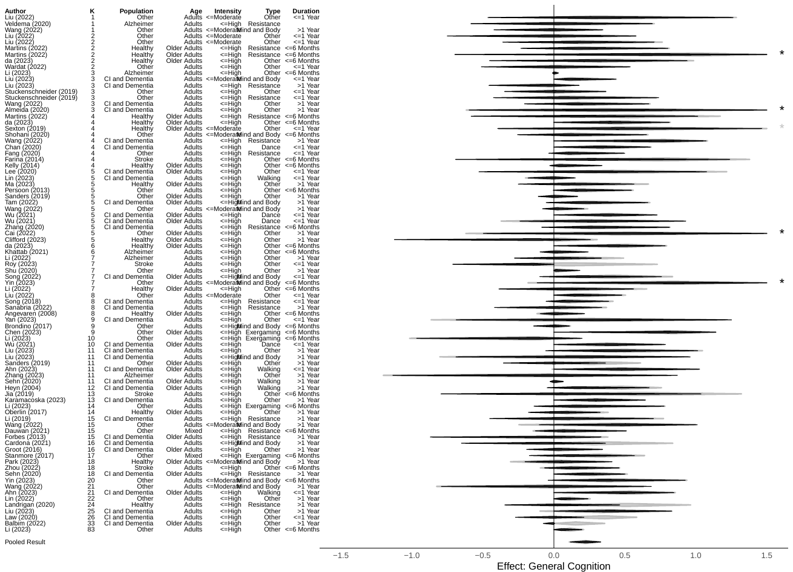
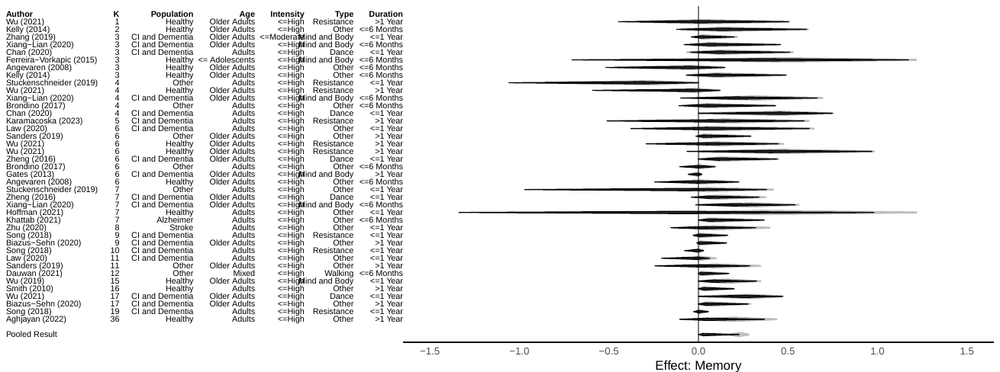
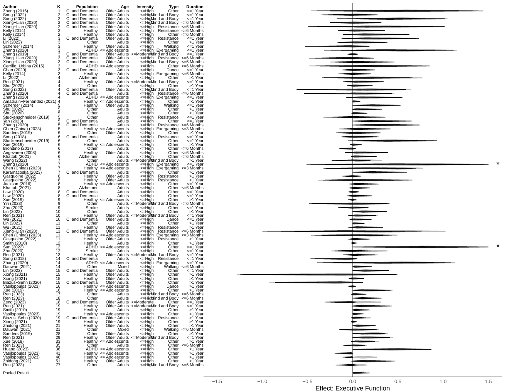